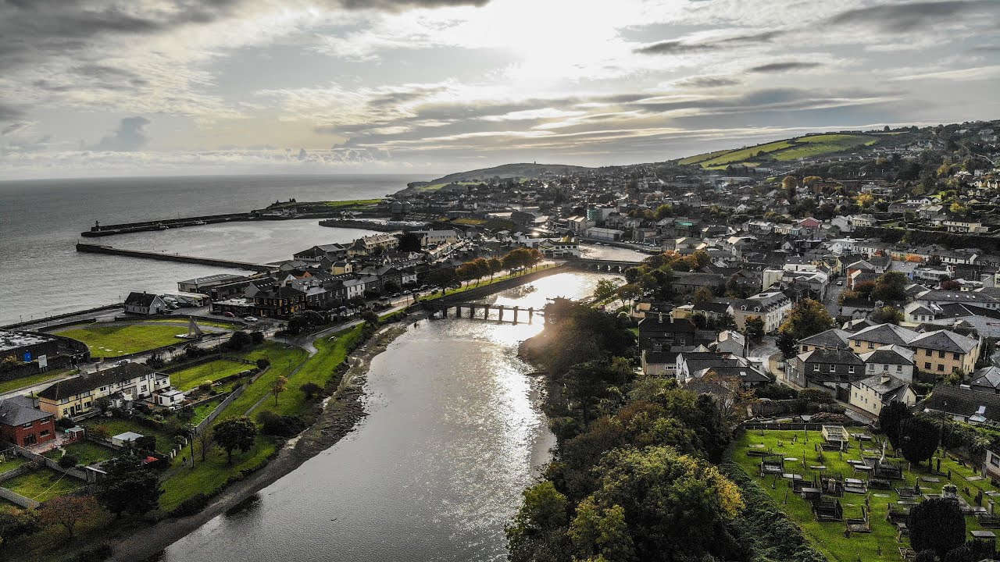

Explore Wicklow Town
Home
Attractions
Events
Gallery
Contact

Welcome to Explore Wicklow Town
Enter a region of beauty and excitement within
the heart of the garden county of Ireland!
Explore Wicklow Town - A Web Development Project 2022 - Shane Reynolds